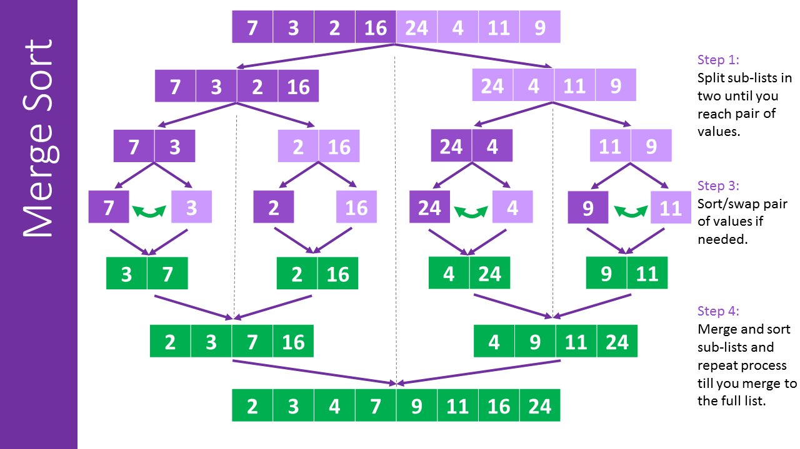

Algorithms And Data Structures
Introduction
Data structures and algorithms are fundamental concepts in computer science. Data structures are used to organize and store data efficiently, while algorithms are used to manipulate and process that data. Together, data structures and algorithms form the basis of many computer programs, and they are essential tools for improving the efficiency and performance of those programs. The study of data structures and algorithms is an important part of computer science because these concepts are used to design and analyze efficient solutions to a wide variety of problems. Feeling Nerdy?...Well Check out my Algorithms analysis project in C++ on Replit! and Github
Merge Sort
Here is an image showing the mergesort algorithm
Merge sort has a time complexity of O(n log n), making it a good choice for sorting large lists. It is a stable sort, meaning that the relative order of elements with equal keys is preserved by the sort. Merge sort is also an example of a divide-and-conquer algorithm.
Quick Sort
Quicksort is an efficient sorting algorithm that like mergesort uses a divide-and-conquer approach to sort a list of items. It works by selecting a "pivot" element from the list, and partitioning the other elements into two lists based on whether they are less than or greater than the pivot. The two sublists are then recursively sorted using the same quicksort algorithm.
Here is a video on how to quicksort works.
Quicksort has a time complexity of O(n log n), making it a fast and efficient sorting algorithm for large lists. However, it is not a stable sort, meaning that the relative order of elements with equal keys may be changed by the sort. Read about Stable Sorts at FreeCodeCamp
Selection Sort
Selection sort works by repeatedly finding the minimum element from the unsorted part of the list and adding it to the sorted part of the list. In every iteration of selection sort, the minimum element (given ascending order) from the unsorted subarray is picked and moved to the beginning of unsorted subarray. After every iteration the sorted subarray size increases by one and the unsorted subarray size decrease by one.
Selection sort has a time complexity of O(n^2), making it less efficient than other sorting algorithms for large lists. However, it has the advantage of being simple to implement and requiring a small amount of additional memory. Selection sort is not a stable sort, meaning that the relative order of elements with equal keys may be changed by the sort.
Heap Sort
Heapsort is a comparison-based sorting algorithm that uses a binary heap data structure. It has two main steps:
Data Structures
Data structures are used to store and organize data in a computer so that it can be accessed and modified efficiently. There are many different types of data structures, including arrays, linked lists, stacks, queues, trees, and graphs. Each type of data structure is designed to store data in a specific way, and has its own advantages and disadvantages. Some data structures are better suited for certain tasks, while others may be more efficient for different types of data or operations. Understanding the characteristics and trade-offs of different data structures is an important part of designing and implementing efficient algorithms and software systems. I would highly suggest you look at my recommended books in the Favorite books section
Linked lists
A linked list is a linear data structure in which each element is a separate object, consisting of a node and a reference (link) to the next node in the sequence. The main advantage of linked lists over arrays is that elements can be inserted or removed from the list without reallocation or reorganization of the entire structure. However, linked lists require more memory overhead to store the references, so they are less efficient for cases where the size of the list is fixed or the majority of operations are element access rather than insertion or deletion. The size flexibility in linked lists can make them use less memory overall. This is useful when there is uncertainty about size or there are large variations in the size of data elements.
To get a visual, heres an image of a linked list

Here you can see that a linked list consists of a series of node objects. Each node object has an address and a data attribute. In C++, the address is known to be stored in a pointer object. Each pointer object points to each node with a memory address location number, usually this is in hexadecimal. Check out my linked list on Replit! and on Github